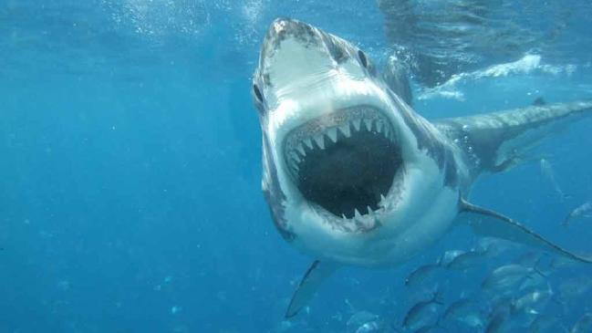

INVASION OF THE SHARK-MEN
by Alan Ryker

I hook the hard drive to my laptop and click on a random video file. Leroy's mustached face fills most of the screen. His age isn't as inscrutable as most homeless people's. He looks to be somewhere between forty and fifty. His hair is buzzed down to salt and pepper speckles across his scalp. Except for the big mustache, his face is smooth-shaven. His deep pit eyes stare through the camera and into our living room. His mouth carefully metes out his words. "—new instincts programmed in, instincts that tell them to wear clothes. Instincts that tell them to smile at certain tones, nod at certain cues. But these responses mean nothing. They're just reflex."
Carla walks through the door of our tiny Harlem apartment, hoists her heavy messenger bag over her frizzy head, and says, "Isn't that Marcus's footage? David, how'd you get it?"
Marcus was filming a documentary about Leroy, before Marcus disappeared.
Leroy says, "These creatures, these shark-men, feel no fear. They have no pity, no morality, no self-reflection whatsoever. Even if sharks feel some kinship with other sharks, we're not sharks. We're prey."
I pause the video. "I got a hard drive from Marcus."
"So he's back, huh? I knew he was fine, just stirring up drama like always. Where's he been?"
"No, his neighbor brought this over. Said Marcus told him to if he didn't hear from him in two weeks. It's been two weeks." I hand her a cereal box and a letter. "The hard drive was in the box." On it, our address was scrawled in black marker. She reads the letter. It says:
David,
If you're reading this, I'm probably dead. That really sucks.
Watch the footage on this drive. You need to know what's going on in this city. It's not safe here. And they've seen you.
Be safe. I love you and Carla.
Marcus
Carla says, "Dramatic little rich boy. But maybe something on the drive will tell us where he is."
But he's never told me he loves me. This isn't good.
The police won't look for him. He's disappeared before without telling anyone. Showed up months later with some exotic tattoo or disease and a bunch of stories to tell. The police point out that he's an adult, and free to come and go as he pleases. The last time I spoke to him, he refused to let me up into his apartment. He cursed me out. I was pissed about that. I waited, gave him a chance to call me and apologize. Eventually I called him, but he wouldn't answer his phone. I've talked to people in his building. Nobody's seen him since that day.
I'm a graphic designer. Carla is a grad student, Urban Studies. Marcus is, in Carla's words, "a spoiled-rotten rich brat who'll crash hard once the world pops his overinflated sense of entitlement." But we were all once members of the same writing crew, a graffiti crew. We used to write in Freedom Tunnel, one of the most famous graffiti spots in the world. Last we knew he was shooting a documentary in Freedom Tunnel. Not about the graffiti, but the homeless population that lives there. The tunnel people.
Carla says, "Start at the beginning."
I click the first file.
Of all the tunnel people, Marcus was most fascinated by Leroy. Again, Leroy's face fills most of the screen.
From off-camera, Marcus asks, "How did you end up down here?"
"I'd been homeless for some time. The streets is hard. Eventually I met a guy who told me about a place where you don't have to worry about the cops, where you won't freeze in the winter or cook in the summer. Down here you don't have to worry about some fucking kids setting you on fire or stomping you while you're asleep. Sounded like heaven to me. So he brought me down here and let me stay with him until I found enough wood to build my own place."
Marcus asks, "And you've lived here since?"
"Down here in the tunnel, yes, but this is my fourth house. The one I built then was destroyed in '91 when Amtrak moved in and reopened the tunnel. Before that it was abandoned, and nobody messed with us."
"What happened to your other houses?"
"One was burned down by a vindictive woman. I was in it at the time, barely got out. The third was demolished when Amtrak tried to move us out again. It happens occasionally."
Marcus asks, "So why do you stay here, if you have to keep rebuilding?"
Leroy raises an eyebrow and smirks. His teeth are long and covered in plaque, but he has all of them. "You wouldn't ask that if you'd ever lived on the street. This is almost like not being homeless. They can't shut off the power hookups down here. I've got a mini-fridge and a space heater. I got a bed—an actual bed, not a piece of cardboard. You're sitting on a couch. Why do I stay here? Shit."
Leroy looks away and then looks back. "You know what, though? Maybe I'm too comfortable."
I fast forward. Leroy stands outside his house. I can see now that it's a good-sized shed. Two dogs jump up and down, ecstatic with his attention. They're both mutts: one small and terrier-ish, and one big. Leroy pats the big one. "This is Bozo. I got him after somebody stole my TV. Nobody steals from me anymore. You can hear his bark a mile away."
Marcus asks, "And who's the little guy?"
"Little guy? This killing machine is Monster. Mon-Mon. He keeps the rats away. He's killed thousands of them. Hell, I barely have to feed him. The rats down here, about half of them are big enough to kill a cat. But they don't fuck with Monster." He grabs the little dog by the scruff of the neck and shakes him. Mon-Mon snarls, baring teeth that look entirely too big to fit in his head. "Keeps away other pests, too. Most of the graffiti punks stay away from here, but he caught one spraying up my wall and took a bite out of his ankle. I heard a scream, and when I got out here the kid was running down the tunnel, and Monster had a bloody piece of denim hanging out of his mouth."
Carla elbows me. We were those graffiti punks once. I can understand the hostility. People like us go down into Freedom Tunnel as tourists. We could escape the scrutiny of the police. Of our parents. Society. People like Leroy are there out of necessity. But the art… Beneath Riverside Park, where sunlight shines down through the grating, creating natural spotlights, the best writers in the city have put up the most amazing pieces you can imagine. Artists can take their time, making originals and recreating famous paintings. With beams shining down from the street and filtering through the dust like stained glass, it feels holy. It was our Sistine Chapel, before we grew up and got responsibilities.
But Marcus and Leroy aren't in that part of the tunnel. Marcus zooms out, putting the scene in full perspective. The shack stands about eight feet tall, but is dwarfed by the concrete cavern that contains it. The puny camera-mounted light barely grays the darkness. I can just make out ghostly, enormous I-beams holding up slabs of concrete.
I open another file. Leroy walks through the darkness, shot from the side. Marcus is unseen, but the image rolls with his gait. Leroy says, "You know, I didn't tell you the whole truth about how I got down here."
"No?"
Leroy shakes his head. He strolls past other shacks. Men and women stand out front, staring at the pair as they walk by, staring into the camera. They float in the darkness like astronauts on the brink of nothing. "It was drugs that got me down here. Only drugs'll gets you this low. Most the people down here are or were crackheads. I used it for years. My wife kicked me out of our house at the end of a gun, with our baby screaming in the other room. She was right to do it. I'd sold almost everything we owned. I'd brought bad people into our home.
"I landed in prison. Spent three years in prison. Got out and didn't even know where my wife had gone. Started with crack again. I don't smoke it anymore, but I want to."
Marcus asks, "How do you keep from falling into drugs again?"
Leroy stops walking and looks into the camera, "I try to stay away from users, and I tell myself that it never made me feel good, only feel less, which seemed good at the time. I can see the brink, though. It's always one step away."
I pause the video. Carla says, "This could have been so good. This could have really helped people."
I say, "I know."
"But Marcus can't just grow up and do something to help those less fortunate. He's always got to be controversial. Always got to be the center of attention. He disappears, and you mysteriously get his footage to watch and tell everyone about. When he shows up again—cut documentary in hand—he imagines it'll be to fanfare, a ticker-tape parade, and a huge art house opening. He imagines he'll be the talk of New York."
"Come on, Carla. He could be dead."
"He's using you, David. Marcus is a user."
Leroy stands in a huge dumpster, one big enough to walk around in. Marcus shoots from above, standing on the edge.
Leroy says, "Time to make money."
"What makes you the most money?"
"Albums, books, nudie magazines. You wouldn't believe what I find: microwaves, TVs, video players, computers… I keep what I want and sell the rest. Got my mini-fridge outside a dorm. It's a brawl in the dumpsters outside the dorms come May."
"How much do you make in a week?"
Leroy talks as he sifts through the trash, moving piles of it from one side of the giant dumpster to the other. "A couple hundred for a few days work. Fridays I look for bottles and cans. You know the right places to hit and you can make a hundred just from that. Look at this, a whole box of LPs. I'll take this to my man down on 82nd. Collectors eat this shit up."
I fast-forward. They're back underground, in Leroy's shack. He paces between his mini-fridge and his bed. Marcus silently records him for several minutes. I wonder who'll crack first. Eventually, Leroy stops and glares into the camera, into Marcus's eyes and our living room. "Are we friends? You've been coming down here for a couple weeks, so are we friends?"
I almost say yes.
Marcus says, "Of course."
Leroy slaps the plywood wall and a milk-crate shelf falls off. "Don't bullshit me, kid. I'm not your friend. I'm your subject."
Carla says, "Leroy knows more about your boy than you do."
Leroy moves in close, his knotted brow filling the screen. I tense and sit back into the couch. "How can I be your friend, you a rich kid with a fancy camera, and me a bum, a tunnel rat? You come down here and listen and we talk because we're all desperate for an ear, but you're not just an ear, you're an eye; you watch and watch and what will you do when you're done watching? You'll go. You'll make a movie and live your rich life and never worry about shit. Hell, you'll probably make a million or two off of this." He waves at the camera.
Marcus says, "I don't think you understand the current market for document—"
Leroy cuts him off. "But I'm going to talk anyways, because what else can I do?"
Carla says, "This is where it starts, the shark business."
I say, "I remember."
Leroy says, "There's more to this world than meets the eye, even your all-seeing, all-knowing eye. There's more going on here than a rich kid can understand. You think you've got it all over on us, 'cause you've got an education and a nice place to live, but you don't know shit. The whole world is going to hell and you don't even know."
"What do you mean?"
Leroy backs away from the camera and sits at his table. Even after watching this far, I'm still amazed at the amenities his shack has. Leroy puts an elbow on the table and his head in his hand. He looks into the camera for awhile, then, "I'm going to give you an education kid. Something they won't teach you in school. I'm going to tell you about the shark-men."
Marcus zooms in as Leroy pauses for dramatic effect. It's chilling.
Carla says, "Goddamn it."
Marcus told us he was shooting a documentary that would finally tell the story of one of the city's most interesting—but most unheard—groups of people. Carla, who'd spent years fighting for homeless rights, was thrilled. She'd never expected such depth from Marcus. Then, a month or so into the project, something happened, something that pulled him in completely, and we stopped seeing him, and then he disappeared.
Leroy's forehead goes smooth. He says, "The government has created a race of shark-men. My guess is that they're a type of super soldier, but who knows. They move in, kill and eat anyone not sleeping behind a locked door, and move on leaving nothing, not even bones. Maybe they were made to silently dispose of the homeless population. But I don't think that's it. I don't think we're that important. We're nobodies. When we disappear, no one notices. So my guess is that the government is testing the shark-men on us. They released a few into the city to see what will happen if they drop them into enemy territory. They want to adjust the sights of their new weapon and we're convenient targets. It's nothing personal. But right now, they're programmed to attack the homeless, as a test."
Marcus says, "So what do the shark-men look like?"
"They look like us, but strange. Cold. They walk the streets like they're swimming. After noticing them milling around, I got to talking to people, and they'd noticed them too. I started to do some research at the library." Leroy gets up from the table and grabs a backpack, pulls out a notebook. He flips until he finds his page, and then looks back into the camera, marking a spot with his finger. "I read about all the weird experiments they do on sharks. Sharks would be perfect for something like this. They've got simple DNA. Did you know that they're some of the oldest animals on earth? And their cartilage skeletons are flexible, easy to mold and manipulate."
Marcus says, "But isn't that a problem? A shark couldn't walk without bone."
"You've got no imagination. That's why you watch and listen but don't do. Let those of us with the brains think and do. The solution is right there inside the shark's mouth. Their jaws are cartilage too, but are covered in super-strong crystal blocks of calcium salt. They're light, but can withstand the pressure of a shark's bite. All the scientists had to do was alter the genes to spread this coating over the rest of the skeleton, and suddenly sharks can walk on land."
There's a tone in Marcus's voice, a tone that says he's playing along, that I think I can hear only because I've known him for so long. He's good at making fun of people without them knowing they're being made fun of. "But why not use science to enhance human soldiers?"
"There are huge advantages to using animals. Humans have rights. These aren't human at all, they only look human. They contain no human DNA. These things have fewer rights than Bozo and Monster." Leroy leans forward. "They get dropped permanently into another country, a suicide mission, but they've got no family to ask questions. And they're natural killers. All a shark does is swim and kill. Yeah, they have new instincts programmed in, instincts that tell them to wear clothes. Instincts that tell them to smile at certain tones, nod at certain cues. But these responses mean nothing. They're just reflex.
"These creatures, these shark-men, feel no fear. They have no pity, no morality, no self-reflection whatsoever. Even if sharks feel some kinship with other sharks, we're not sharks. We're prey."
I find that I'm holding my breath and release it. On some level, I have to admit to myself that the scenario Leroy is describing scares me. But it scares me like a horror movie would. The really scary thing is that Leroy believes it.
Marcus told us about this incident. He showed us some of the footage one night. He said, "At that moment, it became clear to me how this man became homeless."
Carla said, "This is exactly why it's so inconceivable that they're still shutting down mental facilities across the country. Multi-trillion dollar war? No problem. But taking care of our own sick? No funding. He was probably released from a closing facility."
Marcus said, "That's what I was thinking. Actually, that's one of the reasons I wanted to show you this. You know about this sort of stuff. I was hoping you could point me towards where I can look for this poor guy's history, see if he was ever in the system, other than prison."
"I can get you some numbers. I don't know if you'll be able to find anything out about him specifically, but if you tell some of these social workers that you're making a documentary, you might be able to get some interviews."
Marcus nodded. His eyes unfocused as he lost himself in the possibilities. "Wow, that would be great."
"You just have to promise me that you won't go back down there. You're not trained to deal with these situations."
"I have to go back one more time. I have to get one more interview."
Carla said, "You're too old to be taking chances like this," but she fired up her computer to get him contacts.
If the number of remaining video files is an indication, he lied about only going down one more time.
When I open the next file, they're walking down city streets again. Marcus follows Leroy, who leads him to an alley entrance where several homeless people sit against the iron gate blocking the alley off.
Leroy says, "This is where it's the worst. But what can we do?"
Marcus pans his camera around. People walk quickly by, ignoring the camera, ignoring Leroy, not wanting to be involved.
Leroy says, "We're being hunted in plain sight, but there are so many people out here that we can't do anything about it. If these assholes would just open their eyes, look around, notice what's happening to their fellow man, they'd see. They'd see and they'd shit themselves, so they keep their eyes locked forward."
And they do. Even as he insults them loudly, none of them look at him. Marcus follows Leroy as he approaches the group in the alley entrance.
Leroy says, "This is the kid I was telling you about." They all nod at the camera. Leroy says, "Are there any hanging around today?"
One of them points to another homeless man across the street. The man across the street is dressed in rags, not the usual dirty-but-intact clothing homeless can find in plenty in a rich city, but rags. He paces up and down the block, walking slowly back and forth across the street. He avoids traffic, but at his own pace. He stares at the camera.
Marcus asks, "That's one of the shark-men?" He turns the camera down towards the men sitting on the sidewalk. They look up at him with eyes searching for insincerity, but desperate to share.
One says, "Yes. Definitely. You see the way he moves? See how he looks at us kind of sideways? We didn't know what was wrong with these freaks until Leroy told us about what he read at the library."
Marcus asks, "Is he dangerous?"
Another man says, "Fuck yes he's dangerous. What do you think? He's a shark!"
Marcus asks, "So what are you going to do? Will he attack?"
Leroy says, "He'll wait until dark. He'll fade away before the light does. Then he'll try to catch them sleeping."
"But we take turns keeping watch. It's like a damn war."
Marcus asks the man who just spoke, "Have you ever been attacked?"
"Yeah, but I never sleep alone, so we fought the dude off. At first I thought he was just trying to steal my shit, but he wouldn't get off me. I yelled and we finally managed to scare him away. But I've heard stories. Down in the park, one guy heard noises off in the trees and wandered over and found one of these freaks eating a guy, pinning him down and literally tearing at him with its teeth. By the time he got the cops, there was nothing left. The cops actually held him for drunk and disorderly, just to be assholes."
Marcus pans the group. They're all nodding. He turns the camera to the man across the street. He's blond. Young. Still pacing. And staring straight into the camera. Then Marcus crosses the street.
Leroy says, "Are you crazy?" But Marcus doesn't pause.
Carla says, "What is he doing?"
I say, "What's it matter? This guy isn't a shark-man."
Carla smacks my arm. "I know that, but that doesn't mean he's not dangerous. Look at him. He obviously resents Marcus filming him."
As Marcus crosses the street a car honks. Marcus turns and looks, and an angry cabby flips him off. He turns back to the shark-man, who's stopped pacing. He waits, relaxed. As Marcus nears, the man's face comes into view. It contains absolute calm, but not serenity. More like the calm of a manikin, something that doesn't know how to look any other way. Marcus comes within a few feet, stopping just outside the man's personal space, although I would consider that man's personal space to extend several blocks.
Marcus asks, "Excuse me, sir. Would you mind if I ask you a few questions?"
The man doesn't speak. His skin is smooth. He has a sharp nose with a bridge that runs straight into an unworried forehead with no brow ridge. He could be a model.
I say, "Pretty good-looking for a homeless guy, huh?"
Carla isn't quite speechless, but she's distracted. "If Marcus ever makes this film, that man will have a modeling contract in a heartbeat."
Marcus says, "I'm making a documentary about the plight of the homeless in the city. Do you have anything to say about the subject?"
The man smiles. I'm struck by how white and straight his teeth are. He nods, but says nothing.
Carla says, "The poor man."
Marcus moves a step closer, and the man smacks the camera out of his hands. It hits the ground and the video scrambles, but the audio continues.
Marcus says, "What the fuck? Get off me! Hey!"
Carla and I look at each other. I say, "Poor man?"
Carla is abashed, but recovers quickly. "Yes, poor man. He obviously has mental problems, but was minding his own business until Marcus stuck a camera in his face."
I learned long ago not to argue with Carla about the homeless. I nod. The sound of scuffling and shouting continues briefly, then we're back in Leroy's shack. Leroy says, "What the hell were you thinking? You knew what he was, and you walk right up to him and start poking him with a stick. Are you crazy?"
"I didn't expect him to bite me." Marcus lifts his forearm and shows the camera the deep, crescent shaped cuts on each side.
Leroy says, "He would have taken that arm off if we hadn't saved your dumb ass. By the way, my friends don't want you coming around again." Leroy searches through a folded stack of clothing until he finds a black t-shirt. He rips it and ties it over the cut.
Marcus asks, "Do you think I should get stitches?" He flexes his fingers on camera, as if checking to see if any tendons were cut.
Leroy says, "How have you survived this long? If you have the money or insurance, of course you should get stitches. And a tetanus shot. Those things fucking eat people. Who knows what diseases they carry?"
Marcus flexes his hand over and over, turning it back and forth. "I can't believe he bit me."
The file ends there. I click on the next. We're outside Leroy's shack. Marcus knocks on the door. Leroy opens the door a crack and peers out, but a moment later Bozo presses his nose, then his head, then his shoulders through the gap. He runs twenty yards before he turns back and begins barking. Leroy steps out and closes the plywood door behind him. He says, "It's not a good day to shoot."
Marcus asks, "What's going on?"
"It's just not a good day. I'm not at your damn beck and call."
"No problem, man. I'm not pushing. But there's something I want to talk to you about."
Leroy says, "How many times do you need to hear 'it's not a good day' before you understand that it means 'Get the fuck out of here?'"
"Listen, I think you need help. I've talked to some people, and they said they could get you the help you need."
Leroy rolls his eyes. "Oh yeah, and what sort of help do I need?"
Marcus doesn't say anything for a moment. Bozo's barking echoes. I try to imagine how loud it must have been there in the tunnel. "You need to be on medication. Have you ever been institutionalized?"
Leroy smiles. "So you want to help me. You and your camera there, you mean. You offer charity on camera for your little movie. 'Rich Kid Saves Crazy Mole-Man.' What a headline."
Marcus says, "You think it's about this? It's not about this. Here." He drops the camera, but doesn't turn it off. It hangs on its strap, swaying. At one point in every arc it shows big Bozo, barking so hard his feet bounce up off the dirt ground. As the tunnel sways back and forth, I start to see ghosts in the darkness.
Carla says, "Look at the way he's exploiting Leroy."
I say, "What do you mean?"
"Leroy thinks he turned the camera off."
"Marcus never said he turned the camera off."
Carla cocks up that damn eyebrow again. "You'd better not be defending him. Whenever Marcus is involved, it's like you regress ten years."
Leroy says, "So you think you know me pretty well. You figure you've got me pegged pretty neat. You condescending, over-privileged son of a bitch. You walk right up to one of them, get bitten, I save you, and you still don't see the truth. But I'm the crazy one? Turn your camera back on. Let me explain it to you so you'll understand." In a blur, Leroy and the exterior of the shack come back into view. "They've never come down here before. They've never found their way, I imagine. I imagine they'd like to, because down here they wouldn't have to wait until night and until we wander into some alley. Well, one finally made it down. We trapped it. The others wanted to kill it, but I told them we needed to study it."
Marcus pans the camera around the dark tunnel. As the camera's light passes, the silhouettes of dozens of people can be made out, their eyes glinting. Bozo barks and barks. "Show me."
Carla shouts at the screen, "Get out of there, you idiot!" I can only watch, in awe of his bravery and stupidity.
Marcus follows Leroy into his shack. Mon-Mon is backed into a corner, snarling at a young woman kneeling in the opposite corner. Marcus's camera freezes on her as he takes in the situation. She's hog tied, her hands and ankles knotted together. She's wearing almost nothing, and the little clothing she is wearing, a make-shift skirt and a tattered t-shirt, is twisted and torn. Her mouth is being forced open by a thick piece of dowel—maybe a broken broomstick—that's been tied tightly into place by a strap around her head. It's tied so tightly that her head tilts back from the strap pressing into her spine just under the base of her skull. Her lips stretch away from her teeth, which unnerve me, though Marcus isn't close enough to show them clearly. Her face is distorted, but I can see she has the same model good looks of the man who bit Marcus. Her skin is too flawless for her to have been on the street long. Her hair is long and blond. Her limbs are slender.
Marcus finally says, "What are you doing? Are you insane?"
Leroy says, "Look at her. Forget your assumptions and look at her. Look at her teeth. Look at her eyes. Touch her skin."
Marcus says, "Leroy, this is just a girl. This is a young woman." He walks towards her, keeping the camera on her. She's calm. If she struggled before, she knows it's pointless now.
Leroy says, "She eats rats!"
"How does she eat rats?"
"We feed them to her. But she gobbles them down whole like candy. She eats the damn bones."
Marcus reaches for a long knife sticking out of a bucket full of soapy water and dishes. The room spins past the screen and settles behind him. He says, "Stay back! I'm taking her."
The camera swings past the young woman's face several times, and her expression never changes.
Leroy says, "Just take a second to look at her."
"I won't send the cops down here. Just let me take her and you won't ever see us again." The camera shakes back and forth as Marcus works, apparently cutting her free. He stands. "Don't try to stop us. People know where I am."
Marcus steps out into the tunnel and begins walking quickly. The camera bounces around. He's leading the girl by the hand. After a few seconds someone yells, "Stop him!"
Leroy says, "No! Let them go."
Someone shouts, "She'll come back. She'll bring more."
Leroy says, "If you touch him, we'll all have to leave anyway. Let them go."
The voices get quieter as Marcus runs down the dark tunnel, Freedom Tunnel. Glimpses of graffiti lit from above spin past the screen. Eventually they surface in Riverside Park.
Marcus says, "Are you okay? Oh, the gag. Here, let me… Do you want to go to the police? I don't know if they'll help you."
There's a pause. The ground sliding across the screen goes from concrete to grass.
"Are you okay?"
Silence.
"They kidnapped a handicapped girl? Goddamn it. Listen, I can't help you. Stay away from the tunnel." He walks away, then turns. "You can't stay here. They'll come get you again. Goddamn it!"
He grabs his camera from where it hangs and shows himself for the first time. He looks terrified. My throat closes up as I pray to God nothing has happened to him. Behind him, people play Frisbee in the sunny park. Behind him, a dog stops fetching and snarls. He asks us, "What would you do? Huh?" He turns the camera and shows her standing in the grass, motionless, staring at him. "Goddamn it." Then the file ends.
I start the next one. Marcus has set the camera on a tripod. He's standing in front of it. He says, "I didn't know what to do with her. I couldn't leave her there. They would have gotten her again and done God-knows-what to her. I knew Leroy was a little off, but this…" He shakes his head. "I had no idea. I can't take her to the police. She needs help. They'll put her right back out on the street. Someone like her would get chewed up. Hell, the next people might not be as sane as Leroy. Is it wrong to say that beautiful people can't live on the street? So I brought her here, until I can get her help."
He steps behind the camera and pans his apartment, past the framed original comic book art, the big stereo system, the mounted skateboard deck collection, finally stopping on her standing in front of his tan leather couch. She's wearing one of his polo shirts and a pair of pants far too big for her. He walks over to her. "Here, sit down." He sits, and she sits beside him. He looks at her, then at the camera. She looks at him. He points a remote at the camera, clicks a button and the file ends.
Marcus stares into the camera again. The date shows that it's been four days. I remember calling him, trying to get him to leave his apartment during that time, and he wouldn't. His eyes shimmer watery and red from their sockets. The strangest thing is, I don't remember him ever shooting himself before. He was never the subject of his films or photographs. He said that as the artist, he was felt throughout the work, was the subject of the work without ever being in the work.
"I don't know what's going on, but there is something strange about the girl. She doesn't sleep. At least, she doesn't close her eyes. She stands all night long, staring. She doesn't talk. If I ask her a question, she smiles and nods or shakes her head. But her eyes never change, never stop watching. She watches and watches and watches and… I can't sleep with her here. Last night I locked myself in the bathroom and fell asleep in the tub. I woke up when she busted the door open. I think she's waiting for me to fall asleep, but I can't send her away."
He takes a long drink from a coffee mug and then grabs the camera, removing it from the tripod. The room spins until we settle on the girl, who'd been standing opposite him the entire time.
"Look at her." She stares into the camera as it zooms in. The room behind her is only dimly lit, and she reflects the light oddly. Her skin is more matte than normal skin.
In a sweet tone, Marcus asks, "What do you want?"
Her face fills the screen. She smiles and nods. Her teeth are perfect squares, and dry. Nothing in her face is slack. Her flesh is perfectly molded and taut.
He asks, "Who are you?" She continues to smile.
"Who are you?!" Her eyes go strange, blank, for just a moment.
I pause the video and ask, "Did you see that?"
Carla says, "What?"
"Her eyes." I rewind the video. I flip back and forth over the frame. It doesn't last more than a fraction of a second. Her eyes are normal; her eyes are blank; her eyes are normal.
Carla says, "It looks like they rolled up into her head for a second."
But I can't help but think that, like a shark before it strikes, she blinked with an extra lid. I don't say anything. I just hit play.
Marcus says, "I'm sorry. I'm sorry. I'm losing it." He sets the camera on the table and walks over to her. The image is of them from the neck down. Comparing their heights, she looks to be close to six foot. He takes her hands. Then he puts his arms around her. A tiny spasm goes through her body, a clenching and unclenching, and she opens and closes her hands where he can't possibly see them. I wish I could see the expression on her face.
The next several video files have matching time and date stamps. They were shot at the same time. I open the longer one. Marcus leans into the camera and whispers. "I have to go out. She's eaten everything in the house. But I have to know what she's doing, and I can't take her with me. So I'm leaving my camera on." He turns to her and says, "I'll be back soon. Just hang out here. Watch TV if you want." Then silence. The girl rotates towards the off-camera door. The door shuts. She stays where she is. I fast forward. She stays where she is. One hour. Two. When Marcus enters the frame, I jump. He drops the bags of groceries and stares at her. He puts his arms around her and buries his face in her neck. He looks at her again and shakes his head, then walks to the window and leans out. He slumps to the floor.
I click on one of the concurrent video files. This one is low-quality, maybe from his pocket digital camera. It's of a homeless woman standing beside a tree. She searches the crowd passing her, and I get the feeling she's not searching only with her eyes. She's tall and athletic and dressed in rags, and the people walking past give her space.
Marcus says, "I just bought groceries. I start walking back the same way I came, and I see this. She looks just like her."
It's true. I can see the similarities. But most of all, she moves in the same strange way. Marcus begins to walk towards her when she notices him and locks on. She walks towards him, but perpendicular to him as well, maintaining the exact same distance. It's a strange sort of dance. He passes her and walks backwards, and, completely unconcerned that he's watching her do it, she begins to follow after him.
Marcus walks backwards for some time, then says, "Shit—" and the world spins and the camera goes black. He must have tripped.
Carla says, "What a jackass."
I ask, "You didn't notice anything strange about her?"
"She needs mental treatment, like a lot of homeless in the city."
I'd thought the similarities were obvious, but maybe my perceptions are being shaped by Marcus's paranoia.
Because she knows me too well, Carla says, "Conspiracy theories are contagious. You start looking for pieces of the puzzle, and suddenly everything fits."
I click the next file. Marcus holds his video camera out the window, showing the people walking down the sidewalk directly outside his apartment building. But some of them aren't walking past, but back and forth, milling, circling—No, they're just hanging around like people who have no place to go tend to do—except they keep their eyes on the door.
Marcus asks, "How long until they decide to come in?"
They don't posture. They don't pose. So maybe they're just normal people who happen to be standing outside his building. That's the obvious answer, the sane answer. But there's another possibility. Maybe their brains are so primordial that they don't have the displays of aggression we have. Maybe they don't pound their chests and bellow. Maybe they wait and wait and then attack. Unlike us, maybe they only bare their teeth before they bite.
Back in the apartment, the girl stands and watches. As Marcus enters the frame, I realize the camera is on a tripod. He moves slowly, non-threateningly. He cups her chin in one hand, running the fingertips of his other down her cheek. He gently pulls her upper lip up and leans in, examining her teeth. I can see him consciously relaxing his tense muscles, trying not to set her off. He says, "My God."
She blinks and he jumps away, but she stays otherwise motionless. I'm leaning forward.
He walks back over to her and raises her arms over her head.
Carla says, "What is he doing?"
She knows what he's doing. He lifts his polo shirt over her head. Her long hair trails up in the shirt and then cascades down over her shoulders. She wears no bra. Perfect is the only way to describe her body. He runs his hands over her stomach, then turns and pulls at his hair. His eyes are wide.
Carla gets up and walks away. "I can't watch this."
The girl watches Marcus as he begins to unclasp her belt, when his buzzer goes off. I say, "Hey Marcus, it's David. Let me up."
Carla gasps and walks back to the couch. "What? You never—"
I say, "I had no idea. This is when he freaked out on me."
Marcus runs off-camera towards the door. "David, get out of here."
"What are you talking about, man? I just made this new poster I want to show—"
Marcus bellows, "Get the fuck out of here! Go!"
My confusion comes through the intercom static. "What?"
"Now!"
I pause the video. "So that's what was happening. He was trying to save me."
Carla scoffs. "You interrupted him raping this girl during a psychotic episode. That fucker. I'm calling the cops."
"I was right there. Those things saw me. They heard me talk to him."
Carla says, "What are you talking about? You're telling me you're buying this? He's crazy. He admitted he hadn't slept for five days. Do you know what that will do to you? It will literally make you schizophrenic. He lost it. I'm sorry for him, but he's flipped, and we have a video of him assaulting and possibly raping a mentally-handicapped homeless girl. Come back to earth, David."
As Carla yells, Marcus leads the shirtless girl off-screen. A minute later the camera moves, showing us the scene out on the street.
She stands in the middle of them, half-naked, unmoving, unblinkingly staring up at the window. Her unbuckled pants hang low as she holds them up with one hand. Now they're all staring up at the window, up at him. Twenty homeless people with their eyes fixed on the camera. He zooms in on her upturned face until it fills the screen. It's grainy at that distance. Marcus quietly says, "I'm sorry." Then he turns the camera on himself.
"I don't have much time. The cops should show up soon to take her away. Hopefully they'll make the shark-men leave. It's the only chance I've got. David—" He pauses for a long time, eventually looking away from the camera. "—I hope I'll see you again. Be careful. In fact, get out of the city."
The file ends. That's it.
I say, "So what do we do now?"
Carla says, "We take this to the police. This evidence of his mental instability might get them to take our missing-person report seriously."
I say, "Yeah. That makes sense." But I'm not sure it does. I can't process what I've seen. What really happened to Marcus? If only I could have seen the girl in person. "Carla, what if he was right? What if there really are shark-men?"
I can see that she's trying to maintain her patience. "You do know that that was the suggestion of a mentally-disturbed homeless man who did his research at a public library. Let me give you some alternate possibilities: what if they were cyborgs from the future? What if they were aliens? What if they really were subjects of a government super-soldier experiment? What if the super-soldier serum drove people of only the Scandinavian ethnic genotype crazy? Or, what if she just had friends, or family, who managed to track her down? Or what if those were just people standing in the street as people do in a city of millions? What if they all stared up at his window because he dragged a half-naked girl outside and then leaned out that window to videotape their reactions?"
Carla's pragmatic, but also stubborn. She makes some sense, but she's also cherry-picking details to coincide with her notion of reality. Maybe Leroy wasn't right, but something weird is going on. Marcus somehow got tangled up—
"Go. Now," Carla says.
I take the hard drive and head to the local precinct office. I finger Officer Redding's card, the officer who told us there was nothing he could do. It's grown dark out since we started watching Marcus's videos. I look up at the buildings, at the old brick and fire-escapes. The city has never faded for me. I never take it for granted. It's the graffiti. It's alive, like the city. I can tell when an experienced writer moves through. I can follow his trail, see when he got interrupted, when he had time to do things right. I can tell when a new kid picks up the can for the first time. It's a story told in the present tense.
As I pass the hardware store, looking for new tags, I see a silhouette in the alley, dark against darker. A homeless man stands there, unmoving. I look at him; he looks at me. I nod; he nods. I smile; he smiles. I run;
©2011 Alan Ryker